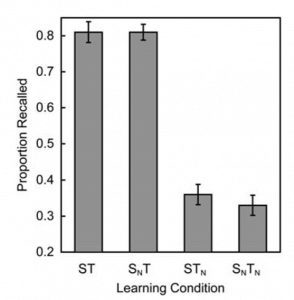
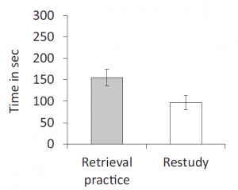
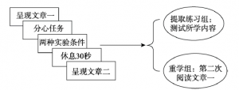

虽然不是心理学专业的学生，但是写文献综述还是比较好玩的，不需要动脑子X 下面是一门心理学通选课的作业，大家可以看看。
测试效应相关实验及理论综述
Chaosls
摘 要 测试效应的相关研究表明，个人的学习和记忆不仅发生在编码阶段。测试或提取练习不仅可以对个人的知识掌握程度进行评估，还可以让人在提取阶段增强对长时记忆的保持。同时，测试效应还能在编码阶段使人改变记忆策略，让人更好地进行学习、记忆。本文依据从谷歌学术下载的文献，对测试效应的相关实验、有关理论、以及未来展望进行综述。
关键词 测试效应 提取练习 学习 记忆
1 引言
测试效应（testing effect）指在学习某一内容时，进行测试可以比重复学习更好地让个人对这一内容进行学习和保持长时记忆。测试（考试、问卷）具有直接作用、间接作用。直接作用是指参加测试这一行为本身就能够促进个人学习和长时记忆的保持，间接作用是指测试结果反馈给人之后，能指导个人下一步应该怎样学习。测试效应则指的是测试的直接作用。在测试中对集体的提取回忆过程则被称为即提取练习（retrieval practice）。
早在James的《心理学原理》中就提出并讨论了测试的作用。自从Karpicke和Roediger（2008）在《Science》上发表记忆提取比重复学习更有利于保持长时记忆的实验报告后，学界开始重视对测试效应的研究。
在现代大学教育中，如何进行有效的自主学习是大学生面临的主要问题。在学习专业知识的同时，大学生还需要接受广泛的通识教育和政治思想教育。大学生需要找到合适的学习策略来帮助其学习记忆庞杂的各种知识。出于学以致用的思想，笔者着重阅读了《心理学与生活》第7章“记忆”，并查阅这方面的文献，了解到了测试效应，并进行进一步学习，最终确定以有关人学习、记忆的测试效应为综述对象，希望能以此加深对心理学的理解，并应用于实际学习生活。
2 测试效应的相关实验
2.1 Tulving（1967）的实验研究
在相当长一段时间内，人们认为学习过程只发生在编码阶段，测试仅仅只能用来评估个人对某一内容的学习水平。因此要达到最好的学习效果，提高长时记忆的保持水平，就应该进行重复学习。
Tulving（1967）的实验则证明，学习不仅发生在编码阶段，人在测试过程中的提取也是一种学习。Tulving把被试分成三组，学习同样的单词表，但每一组的学习程序都不相同。第一组的学习条件是学习、回忆（即测试）、学习、回忆，为STST组。（S：study，T：test）。第二组的学习条件是学习三次、回忆一次，为SSST组。第三组的学习条件是学习一次、回忆三次，为STTT组。
如果人们普遍持有的观念是正确的话，那么SSST组做了最多次数的学习，将是掌握水平最好的一组，STTT组将是掌握水平最差的一组。但根据实验结果，每组被试在最终测试中表现出的水平几乎相同。SSST和STST两组都成功回忆了约20个单词，STTT组成功回忆了约18.5个单词，与前两组没有显著差异。可以认为，在最初的学习之后，一次测试与一次重复学习的效果相当。但是这个实验只揭露了测试具有学习的效果，并没有体现出测试相对于重复学习的优势。
2.2 Karpicke和Roediger（2008）的实验研究
Karpicke和Roediger在2008年对测试效应的研究是相关实验中对具有代表性的。他们以大学生为被试，让每一名被试在最初学习40组英语——斯瓦希里语配对单词，然后随机分为4组，每一组都在学习之后紧接着进行测试，测试之后在进行学习，最终总共进行4次学习、4次测试。
这4组学习条件不同。第一组被试在每一次学习中都要学习全部40个配对此，每一次测试中要进行全部40个配对词的测试，称为ST组。第二组的被试如果在前一次测试中答对了一组配对词，那么他在下一次学习中将不会继续学习这组词，但是会在下一次测试中考察这组词，称为SNT组。第三组的被试如果在前一次测试中答对了一组词，那么他在下一次学习中继续学习这组词，但是下一次测试将不会考察，称为STN组。第四组的被试如果在一次测试中答对了一组词，那么他之后将永远不会再次学习这组词，测试中也将永远不会出再现这组词，称为SNTN组。
在4次学习和4次测试都完成之后，所有被试在1周后接受了一次最后测试，在测试中，被试要求回忆所有40组配对词。最终结果如图：
图1 最终测试中四组被试的回忆率
（来源：Karpicke和Roediger的实验报告）
ST和SNT两组的回忆率接近，都达到80%，而STN和SNTN两组回忆率都很低，没有超过40%。由前两组的结果对比中，可以看出是否重复学习并没有带来明显的差别；而第一组、第三组的结果对比则表明是否重复测验才对保持长时记忆有影响。对于第四组的结果，作者由此证明了“学完一个知识点就不再管它，提高效率学下一个”的传统想法是错的。
这个实验充分证明了测试效应的存在（至少是在实验室条件下和记忆词对方面），而且相比于Tulving的实验，证明了测试相较于重复学习的优势。
2.3周爱保、杨天成、程晨、马小凤、赵静（2015）的研究
Karpicke和Roediger的实验验证了测试效应的存在，但只是在限定条件下对配对单词的记忆，这种知识属于事实性知识，不存在理解上的难度。但学生的试卷上不会仅仅出现只需要背诵就能答对的事实性问题，还会有需要根据事实性知识进行推理的问题，也就是要求学生进行知识迁移，如英文阅读理解或数学题。那么在对于高层次的知识学习与应用，是否也存在测试效应呢？西北师范大学心理学院的周爱保等人对此进行了实验研究。
实验中被试将阅读3篇文章，每篇文章都记载了同一主题的两种对立观点。每篇文章都被设置了10道选择题，2道为事实性问题，即只需要从文章的字面信息中寻找答案；8道为高阶的知识学习应用题，不能仅依靠文章字面信息，而是需要被试进行分析、评估和根据文意猜想来进行回答的问题。
被试被分为两组：重学组和提取组。在学习文章时，两组被试的学习条件不同。如图：

图2 实验流程
（来源：周爱保、杨天成等人的实验报告）
对于每一篇文章，学习结束后重学组将再次阅读一次，提取组将进行一次测试，回答10道设置的选择题。所有文章学习完成后，两组被试进行最终测试，回答30道打乱顺序的选择题。
最终测验的结果是，在事实性问题上，提取组正确率接近80%，重学组正确率接近60%；在高阶的知识学习应用题上，提取组正确率接近60%，重学组正确率接近40%。可以认为，测试效应不仅体现在学习事实性知识上，还体现在对所学知识的归纳、应用、迁移上。
2.4 Magdalena Abel和Karl-Heinz T. Bäuml（2020）的实验研究
前3个实验研究都只是对于测试对学习和保持长时记忆的促进作用进行研究，这个实验则研究了测试对个人学习动机影响的研究。
研究者来自德国，以德国当地大学生为被试，被试需要学习20个瑞典语——德语配对单词。在实验过程中，被试被分为两组：重学组、练习组。首先两组被试都将在电脑屏幕上进行对配对单词的学习。学习结束后，重学组将再一次阅读学习配对单词，并被提醒尽量利用好额外时间进行记忆。同时练习组则进行提取练习，屏幕上随机出现瑞典语单词，要求说出对应的德语单词，无论回答是否错误，屏幕上会马上出现正确对应。
在这个环节结束之后一分钟，进行最终测试。测试之后，实验人员以去取酬金的理由离开，让两组被试在实验室等待5分钟。离开前，实验人员没有关闭被试的电脑，而是打开了记载有瑞典语单词、语法和瑞典这个国家简介的PPT。这是非强制性的，被试可以不看PPT，做别的事。电脑则通过摄像头观测被试是否观看PPT和认真观看了多少分钟。
结果如图：

图3 两组被试在自由选择情况下观看PPT的平均时间
（来源：Magdalena Abel和Karl-Heinz T. Bäuml的实验报告）
可以看到，在自由选择的情况下，提取组的被试选择观看PPT更长时间，也就是说，在做完有关瑞典语——德语的实验之后，他更乐意进一步了解瑞典语和瑞典。
这表明，测试除了能帮助人更好地学习和保持长时记忆之外，还能够强化人学习的动机，让人更愿意去学习。
3测试效应的有关理论
3.1 提取努力理论
提取努力理论（retrieval effortful）由Bjork在1975年提出。他发现，被试进行提取会比重复学习更加费力，而且一定程度上，提取越费力，最终回忆效果越好。
由此，Bjork提出提取努力理论，认为被试付出努力越多，记忆的内容的记忆保持就越好。Jacoby通过一系列实验中对这个理论进行了探究。在1978年的一个实验中，两组被试在不同条件下学习。第一组被试被告知，在学习后要进行测试，第二组则仅仅被要求记住答案。在两组被试都学习结束后，进行最终测试。结果表明，第一组的学习水平高于第二组，Jacoby认为这是由于前一组被试需要付出提取努力。也就是说，前一组被试是为了能够再次提取学习内容而进行学习，后一组则不需要这样做。
Jacoby还考察了不同提取深度对记忆的影响。结果发现，对单词进行了深层加工的被试比进行浅层加工的被试更容易在之后的再认测试中再认单词。这一结果支持了提取努力理论。
3.2 必要难度理论
由于“提取努力”这一概念过于抽象，不够清晰，Bjork在提取努力理论的基础上进一步提出了必要难度理论（desirable difficulty）来解释测试效应。他引入了存储强度（storage strength）和提取强度（retrieval strength）两个概念。存储强度是指个人对内容存储的相对持久性，提取强度指内容的即时可获得性。
必要难度理论认为，存储强度和提取强度呈负相关，也就是说容易提取的记忆并不能促进记忆的持久保存，而进行努力的提取可以提高存储强度，使记忆保持更加持久。
在现实生活中，学生往往根据学习内容的流畅性，即提取强度，来评估自己对内容的学习记忆水平，所以学习时更倾向选择可促进当前学习流畅性的方法，如重复学习，但事实上不流畅学习更有利于长时学习，如延迟反馈或进行自我测试。
Roediger 和Karpicke（2006）的研究发现，尽管与重复学习相比，重复测试降低了初始学习的学习效果，但它极大地增强了长期记忆的保留能力。研究者认为这是因为相对于重复学习而言，测试提供了必要的难度。相比于重复学习，学生认为进行测试会更加困难，因而在自己不知觉的情况下，学生会更加努力地学习和记忆。
在张锦坤等（2010）的研究中考察了不同提取难度对测试效应产生的不同影响。被试在完成初始学习任务之后，第一组被要求重复学习，第二组和第三组被要求进行测试。其中第二组被试能够在测试后马上得到反馈，第三组被试在测试后要隔一段时间才能得到反馈。最后三组被试进行最终测试。结果表明，进行测试比重复学习更有利于记忆保持，并且这一优势同时表现在即时测试和延时测试中。同时，即时反馈对所学内容的记忆保持水平不如延时反馈，因为即时反馈会削弱提取难度，这与测试效应的必要难度理论相符。
4对测试效应研究的未来展望
通过学界现有的实验研究和文献中，我们可以认识到，测试不仅仅是一种衡量、评估对知识记忆、掌握水平的工具，还是一种促进学习和记忆的手段。而且相比于仅进行重复学习的记忆过程，学习、测试相结合的方式能够更好地促进记忆的长期保持。通过利用测试效应，人们可以采取更高效率的学习方式来进行对知识的记忆和保持。同时，对于测试效应的一些问题上还需进一步的研究和解释。
4.1 测试效应与个人发展
测试效应是否具有发展特点？测试效应对不同年龄阶层或不同学习成绩水平的个体是否有不同影响？现有研究基本上是以在校大学生为被试进行研究，缺乏对测试效应的发展特点进行研究。如果能够对不同年龄段的人进行测试效应的研究，那么测试效应将能够在教育领域推广开来，根据不同年龄特征来进行教育实践。同时，对于学习成绩水平不同的个体，测试效应是否有不同程度的影响，对于这方面，Robey（2019）进行了有关研究。如果个人原本采用的学习记忆策略效果较好，那么在实验中，测试效应的表现不明显。如果个人原本采用的学习记忆策略效果较差，那么实验中测试效应的表现明显。测试效应是否会对不同学习水平的人有不同影响，差别多大，还需要进一步研究。
4.2 测试效应的理论
本文介绍理论包括提取努力理论和必要难度理论，主要注重对提取方面的研究。在此之前，还有认为测试效应的产生与编码相关的理论，在现在还出现了测试效应是编码和提取共同作用结果的理论（王植洵,张锦坤，2017）。可以说现在存在着许多对测试效应进行不同解释的理论，尚处于一种“百家争鸣”的状态，理论之间存在不同的争论。是否存在一种能尽量完整解释测试效应的理论，还需要研究。
4.3 测试效应的神经机制
测试效应已经通过许多实验研究得到验证，关于测试效应的理论解释及假说也有很多。可以说理论推导工作正在蓬勃发展，但与此同时，有关测试效应的神经机制研究还比较缺乏，尤其是在中国心理学界。在笔者所找到的中文文献中，只有一篇明确对测试效应的认知神经基础研究（梁秀玲、李鹏、陈庆飞、雷怡、李红，2015），该文对测试效应的神经机制做了详细的理论研究与对外国实验的综述，但也缺乏一手的实验数据资料。
4.4 测试效应的扩展研究及应用
到目前为止，对测试效应的研究只集中实验室条件下进行实验，对于实验室外测试效应的实践效果还缺乏数据。而且对于其他物种，是否也存在相应的测试效应呢？同时，是否能够进行跨学科研究，探索对于如今的热门领域——AI领域中，测试效应是否能发挥作用呢？测试效应的研究前景仍十分广阔。
参 考 文 献
Karpicke, J. D., & Roediger, H. L., III. (2008). The critical importance of retrieval for learning. Science, 319(5865),966–968.
Tulving E. The effects of presentation and recall of material in free-recall learning. Journal of Verbal Learning and Verbal Behavior, 1967, 6(2): 175~184
Abel, M., & Bäuml, K. T. (2020). Would you like to learn more? retrieval practice plus feedback can increase motivation to keep on studying. Cognition, 201, 104316.
Robey, A. (2019). The benefits of testing: Individual differences based on student factors. Journal of Memory and Language, 108, 104029.
周爱保,杨天成,程晨,马小凤,赵静. (2015). 多篇章学习中提取练习策略对高阶技能的影响.心理学报,,47(7):928-938.
王植洵,张锦坤. (2017). 提取练习效应的产生机制：编码、提取的整合演变.心理科学进展 ,25(9):1512-1520.
张锦坤,白学军,杨丽娴.(2008). 国外关于测试效应的研究概述.心理科学进展, (04):661-670.
周爱保,马小凤,李晶,崔丹. (2013). 提取练习在记忆保持与迁移中的优势效应：基于认知负荷理论的解释. 心理学报, 45(8), 849-859.
马小凤,周爱保,崔丹,张荣华.(2014). “提取练习”促进意义学习：实验凭证与教学应用.心理科学进展, 22(2):279-287.
马小凤. (2019). 提取练习能够促进程序性知识的学习吗?——基于有提示提取的检验(摘要). 中国心理学会.第二十二届全国心理学学术会议摘要集.中国心理学会:中国心理学会, 492-493.
梁秀玲,李鹏,陈庆飞,雷怡,李红.(2015). 提取学习有利于学习与记忆的认知神经基础. 心理科学进展, 23(7):1151-1159.
杨丽娴,张锦坤,白学军. (2010). 不同提取难度的反馈形式对测试效应的影响. 心理科学, (6), 1389-1392.